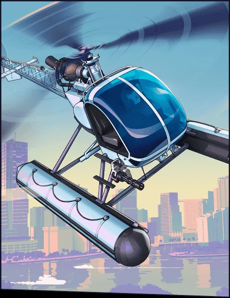

Elicotteri
Western Sea Sparrow
Western Sea Sparrow in GTA VI: elicotteri. Ispirazione: Sikorsky S-300, un tempo Hughes 300. Visto in un media ufficiale, senza nome comunicato.
 Copertina ufficiale, Sea Sparrow
Copertina ufficiale, Sea SparrowImmagini ufficiali © Rockstar Games / Take-Two Interactive. Provenienza e crediti.
Cosa c’è da sapere
Il Sea Sparrow è un elicottero leggero montato su galleggianti. La sua ispirazione scelta è il Sikorsky S-300, un tempo Hughes 300. Il database lo associa al Trailer 1, senza nome comunicato; i galleggianti permettono di distinguerlo dalla versione terrestre.
Cosa dice la scheda
Il Western Sea Sparrow è un veicolo della categoria elicotteri censito su Leonidakit. L’abbiamo visto nelle immagini ufficiali, senza etichetta. Il nome scelto è provvisorio e cambierà con la prima menzione dello studio. Lo si individua nel Trailer 1, tra le inquadrature della città e della costa.
I numeri arrivano il 19 novembre 2026: prezzo, velocità massima, accelerazione, capienza e punti vendita, rilevati nel gioco.
Il modello reale
L’accostamento scelto per questo veicolo: il Sikorsky S-300, un tempo Hughes 300. Lo studio non usa nessuna licenza e non cita nessun riferimento. Questo accostamento è una deduzione tratta dalle immagini.
Nella serie, questo tipo di veicolo
In un GTA, l’elicottero è il veicolo dei tetti, degli ospedali e della polizia. Accorcia tutti i tragitti e ti costringe a leggere la mappa in un altro modo.
Identità
| Modello | Sea Sparrow |
|---|---|
| Costruttore | Western |
| Stato | Visto in un media ufficiale |
| Categoria | Elicotteri |
| Ispirazione reale | Sikorsky S-300, un tempo Hughes 300 (accostamento della community) |
| Fonte | Trailer 1 |
Scheda informativa
Quello che non è ancora pubblicato mantiene il suo stato: niente è inventato, e i costi d’uso non sono meccaniche confermate.
Come si ottiene
- Prezzo
- Prezzo in arrivo
- Acquistabile
- Acquisto da confermare
- Come si ottiene
- Ottenimento da confermare
- Dove trovarlo
- Posizione in arrivo
Prestazioni
- Accelerazione
- Da confermare
- Velocità massima
- Da confermareUna velocità massima non è una velocità di percorrenza.
- Frenata
- Da confermare
- Tenuta di strada
- Da confermare
Capacità
- Posti
- Da confermare
- Terreno
- ariaStimatoDedotto dal tipo di veicolo (categoria del sito), non da una scheda tecnica.
- Carico
- Da confermare
Costi d’uso
- Carburante
- Carburante: meccanica non confermataUn indicatore visto in un trailer non prova né un prezzo, né un consumo, né un costo d’uso.
- Manutenzione
- Manutenzione: meccanica non confermataPer GTA VI non è stato annunciato nessun costo di manutenzione dei veicoli.
- Riparazioni
- Riparazioni: meccanica non confermataLe riparazioni a pagamento di GTA V non provano niente per GTA VI.
- Assicurazione
- Assicurazione: meccanica non confermataPer GTA VI non è stata annunciata nessuna assicurazione dei veicoli.
- Rivendita
- Rivendita: meccanica non confermataUna rivendita conta solo se è possibile e se il suo prezzo è noto o scelto come ipotesi. Non riduce mai i soldi da pagare oggi.
Sulla mappa di Leonida
Gli aerodromi individuati sulla nostra mappa. Dove trovare esattamente questo velivolo lo sapremo all’uscita.


Elicotteri
Sea Sparrow
Dove trovarlo: Posizione in arrivo
Luoghi legati agli elicotteri sulla nostra mappa (non una posizione confermata per questo veicolo): Autograph Flight Support, LTF Airfield.
Luoghi collegati sulla nostra mappa
Personalizza questo veicolo
Una sola voce per un veicolo della categoria “Elicotteri”, ancora da confermare: Rockstar non ha pubblicato nulla sulla sua personalizzazione, niente è inventato.
Un errore in questa scheda? Ogni modello reale citato è una deduzione tratta dalle immagini ufficiali. Lo studio non conferma niente, e non usiamo nessun contenuto rubato. Se hai una correzione, la pagina Contatti serve a questo.